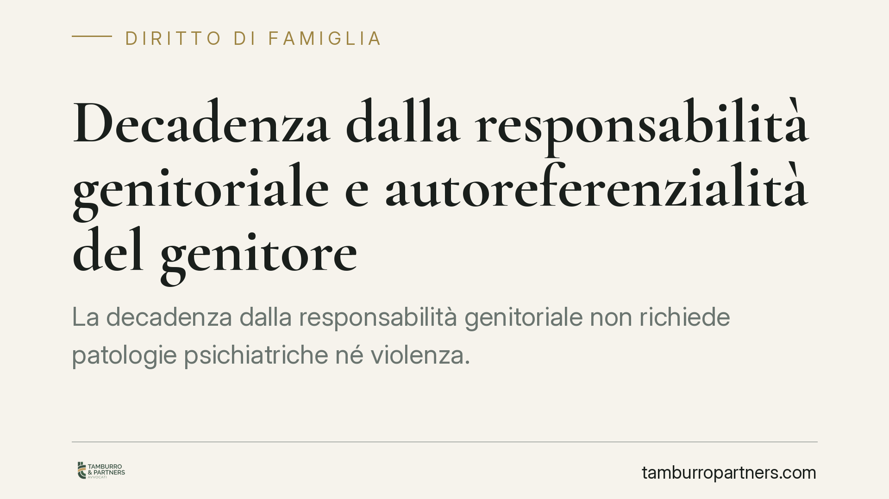

Decadenza dalla responsabilità genitoriale e autoreferenzialità del genitore
La decadenza dalla responsabilità genitoriale non richiede patologie psichiatriche né violenza. Anche una condotta autoreferenziale, che antepone i bisogni del genitore a quelli del figlio, può integrare i presupposti dell'art. 330 c.c. Un orientamento giurisprudenziale che sposta l'attenzione dal comportamento del genitore all'effettivo pregiudizio per il minore. Vediamo cosa cambia e come muoversi.

Il quadro: cosa si intende per autoreferenzialità
Nel diritto di famiglia il termine «autoreferenzialità» descrive l'atteggiamento del genitore che legge ogni dinamica familiare a partire dai propri bisogni, dalle proprie convinzioni o dai propri conflitti, perdendo di vista l'interesse concreto del figlio. Non è una categoria clinica: è un modo di agire che può manifestarsi in forme apparentemente non drammatiche – rigidità educativa, strumentalizzazione del minore nel conflitto con l'altro genitore, incapacità di riconoscere i bisogni evolutivi del figlio.
Il punto rilevante è che questa condotta può produrre un pregiudizio reale pur in assenza di maltrattamenti, abbandono o disturbi psichiatrici conclamati. È qui che si gioca il tema della soglia probatoria.
> Nota redazionale – verifica necessaria. La materia è stata affrontata da un orientamento della Cassazione Civile, Sez. I. Il riferimento a una specifica ordinanza datata 2026 non è stato possibile confermarlo presso le banche dati al momento della redazione: va verificato numero, sezione e contenuto esatto prima di ogni citazione puntuale. Fino alla conferma, trattiamo il principio come orientamento e non come pronuncia individuata.
Inquadramento normativo
La norma di riferimento è l'art. 330 del codice civile, che consente al giudice di pronunciare la decadenza dalla responsabilità genitoriale quando il genitore viola o trascura i doveri a essa inerenti, oppure abusa dei relativi poteri, con grave pregiudizio del figlio.
Va distinta dalla misura prevista dall'art. 333 c.c., che disciplina i provvedimenti meno gravi: quando la condotta del genitore, pur pregiudizievole, non è tale da giustificare la decadenza, il giudice può adottare provvedimenti «convenienti» (ad esempio prescrizioni, limitazioni, allontanamento). La differenza non è nominale: la decadenza è la misura più incisiva, mentre l'art. 333 c.c. offre una gamma graduata di interventi.
Sul piano procedurale occorre tenere presente l'art. 336 c.c., che regola il procedimento davanti al tribunale su ricorso dell'altro genitore, dei parenti o del pubblico ministero, con audizione dei genitori e, nei casi previsti, del minore.
Sul piano dei principi, il criterio guida resta il superiore interesse del minore, sancito a livello internazionale dalla Convenzione ONU sui diritti dell'infanzia e dell'adolescenza del 1989. Il riferimento al relativo articolo va verificato nella versione ufficiale prima di una citazione puntuale.
Perché la soglia probatoria si abbassa
L'elemento di maggiore impatto pratico è il seguente: per fondare una misura ablativa non è indispensabile dimostrare una patologia o un episodio di violenza. È sufficiente provare che la condotta del genitore – anche se non riconducibile a un quadro clinico – produca un pregiudizio concreto e attuale per lo sviluppo del minore.
Questo sposta il baricentro dell'accertamento: non si valuta solo «cosa ha fatto» il genitore, ma «quale danno» ne deriva per il figlio. Le relazioni dei servizi sociali, le consulenze tecniche d'ufficio e l'ascolto del minore assumono quindi un peso decisivo.
Non una misura punitiva
La decadenza non è una sanzione contro il genitore, ma uno strumento di protezione del minore. Lo conferma l'art. 332 c.c., che prevede la reintegrazione nella responsabilità genitoriale quando sono cessate le ragioni che avevano giustificato la decadenza e non sussiste pericolo per il figlio.
Questa lettura bilancia il sistema: la misura è reversibile, ancorata alla situazione concreta e orientata al recupero della relazione, non alla sua definitiva recisione.
Implicazioni pratiche per il genitore coinvolto
Chi è parte di un procedimento di questo tipo deve sapere che l'esito non dipende dall'assenza di «colpe gravi» in senso tradizionale. Un comportamento ritenuto rigido, conflittuale o indifferente ai bisogni del figlio può pesare quanto una condotta più eclatante. La documentazione prodotta, la qualità della collaborazione con i servizi e la capacità di dimostrare un reale centramento sul minore diventano elementi determinanti.
Cosa fare in concreto
- Collabora attivamente con i servizi sociali: i verbali e le relazioni confluiscono negli atti e orientano la decisione del tribunale.
- Documenta il rapporto con il minore: scelte scolastiche, mediche ed educative vanno tracciate, così da mostrare attenzione ai suoi bisogni effettivi.
- Modera il conflitto con l'altro genitore: la strumentalizzazione del figlio nel contenzioso è un indicatore di autoreferenzialità.
- Valuta un percorso di supporto: mediazione familiare o sostegno alla genitorialità possono incidere sulla valutazione complessiva.
- È opportuno un confronto con un legale sin dalle prime interlocuzioni con i servizi, e non solo dopo il deposito del ricorso.
---
Contributo informativo a cura di Tamburro & Partners Avvocati – Avv. Giuseppe Tamburro. Non costituisce parere legale.
Ogni famiglia ha il suo equilibrio.
Separazione, divorzio, affidamento, assegno: se vuoi un confronto riservato su una specifica situazione, scrivi allo studio. Ti rispondiamo entro un giorno lavorativo.